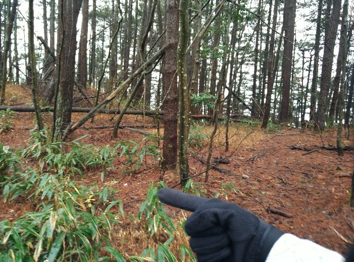
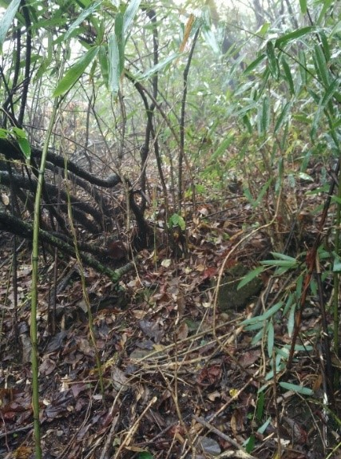

发信人: Germ (1赤那1), 信区: outdoor
标 题: 2015 大明山探路报告
发信站: 饮水思源 (2015年11月26日09:44:07 星期四)
一、线路简介
大明山：
大明山距黄山70公里，地形高差达一千余米，因而山高谷深，层峦叠嶂，群耸立，气势十
分壮观。气候条件及地质条件与黄山类似，山色黟然若黛，称之“浙江小黄山”
时间：2015.11.19至2015.11.21
天气：两天小雨
计划路线：
大明山寻找技术路线上山：
成功：牵牛岗→千亩田→梯田营地（扎营）→顺溪镇下撤
未成功：沿常规路线上山→千亩田（扎营）→大明山下撤
实际路线：
大明山上山（准技术路线（有难度，但和zzm描述的不同））→牵牛岗→滑雪场平台
→千亩田→大明山下撤
二、地图制作（by pyh）
screen.width - 200){this.width = screen.width - 200}">
大明山上山：20m等高线
screen.width - 200){this.width = screen.width - 200}">
梯田营地：20m等高线
screen.width - 200){this.width = screen.width - 200}">
顺溪镇下撤：20m等高线
screen.width - 200){this.width = screen.width - 200}">
全地图：50m等高线
screen.width - 200){this.width = screen.width - 200}">
实际路线（蓝色为大明山环线参考航迹，粉线为ml手机记录航迹）
由于两天的行程可能变化很大，小地图只是制作了三个探路难点的部分，其他部分计划用
手机软件oruxmaps导航（过度重视3个难点忽略了其他部分线路也是我们这次探路遇挫的原
因）
三、探路过程
1. 向导老王家是大明村1号，房子前面有一条小溪，6:40从老王家出发，沿溪边而上，前
20分钟，有3-4次穿过溪水，水量比较大，踩石头过比较慢，大队伍建议想办法缩短时间，
7.28到达之前地图上规划的技术路线的入口，是一条水量较大的溪，大石头较多，没有明
显的路，只能溯溪，返回，继续沿原航迹走
2. 8:05发现明显岔路，左边偏离航迹，路上有户外的布条，猜测可能是寻找的技术路线
，一路沿山脊上升，经过两处难点（小队伍不需要布绳），上升500m左右，9：20与原轨迹
汇合。向前一小段，遇到溪水，水流比较急，下面是较大的瀑布，探路无果，只能过溪，
这个点可以不湿鞋，但难度比较大，
screen.width - 200){this.width = screen.width - 200}">
过溪之后，向前一段，10：30到达航迹lunch点，有较大空地。
这段上升路径明显，强度比较大，有3处难点，但应该不是zzm所说技术路线
screen.width - 200){this.width = screen.width - 200}">
航迹一
3. 继续前进。两次遇到公路，公路只走一小段，公路和山路的入口不好找
screen.width - 200){this.width = screen.width - 200}">
第二段公路结束的标志（我们午餐点）
4. 之后一段路很好走，很平缓，12:30 走到一个下坡，下一半发现偏离航迹，偏离航迹
的路径很明显，树上有路条，询问向导和回来对比网上的航迹，发现是可以走到大明山景
区（有航迹）然后可以切到千亩田（暂无航迹，而且在景区被发现会被收门票）
5. 13：30返回偏离航迹点，分散寻找航迹路径入口，未果，沿航迹硬切，路很难走，不
远处（航迹oldtrail处）是一个很大平台，这段路大概300m左右，15:00我们全部到平台（
具体见后文）
 screen.width - 200){this.width = screen.width - 200}">
树林路
 screen.width - 200){this.width = screen.width - 200}">
灌木丛路
screen.width - 200){this.width = screen.width - 200}">
航迹二
6.平台是滑雪场，走过滑雪场，沿航迹继续向前，滑雪场到扎营点有一段会偏离旧航迹，
这段路路迹明显，下雨泥路有点滑，扎营点附近有一条非常明显的岔路（也可以说航迹路
径入口很不明显，被灌木丛遮挡，而且航迹路线是一条老路），但走过一段老路后路径非
常宽阔，经过小溪营地，水源方便可取，可大队伍扎营。第一天晚上扎营点到千亩田大概
一个半小时
screen.width - 200){this.width = screen.width - 200}">
航迹三
7.从千亩田下山大概3个半小时（中间有一段时间是布绳下降点），下山有三个难点，一处
可能要布绳下，比较耗时，山底到村口老王家一段很长的水泥路，比较痛苦
四、线路评价
线路强度：****
两天全长22.25km，总上升1641m
线路难度：*****
上山，下山各有3个难点，数次过溪，而且在通往滑雪场平台的那一段路需要时灌木丛路，
需要硬切，难度比较大。
五、营地
1、去的时候可以扎在向导，一楼有空房间，可以不搭帐篷，可容纳20+人（但下山可以
考虑）
2、滑雪场平台很大，如果不是滑雪季节，紧急情况可以扎营(但第二天的路程会比较赶
)
3、小溪营地可以作为扎营点，直接一排扎在路上，旁边是一米高的小木桥，桥下水源
充足，方便取水

screen.width - 200){this.width = screen.width - 200}">
4、千亩田营地
坡下有5、6块空地，坡上有两块空地，每个空地可容纳5、6 顶帐篷，有很多小木屋，天气
恶略的话可以考虑木屋内躲雨，营地费每人10元


screen.width - 200){this.width = screen.width - 200}">
screen.width - 200){this.width = screen.width - 200}">
screen.width - 200){this.width = screen.width - 200}">
六、紧急情况下撤路线
第一天硬切路段附近有一条通往景区的路线，路径明显，下山路段是台阶路。滑雪场平台
也可以通往景区
七、在行前准备、行进过程中的风险控制的成功之处
行动准备：头灯（走了一段夜路），手机导航软件及航迹（3份），充足的水（第一天晚上
赶夜路的时候全队有6升水），手套，防雨防刮的冲锋衣，背包罩，靠谱的基地联系人zzm
成功之处：
3人份的手机导航软件，使得航迹记录，前出探路，时间节点记录非常方便（靠谱的队记详
细的记录了探路过程，）可以方便的添加图片节点，可以多条航迹对比，而且行走中可以
及时的核对航迹，（赞ios的行图软件，多了一层地形图，简直就是一个移动版的添加等高
线的google earth），但下雨天手机电量是个问题。
赶夜路的时候，发现走到岔路，没能很快找到航迹的路，果断决定就地扎营。
八、不足之处
1、地图的准备，觉得这是出行的最大隐患。行前准备的时候，认为探路的难点是上山
寻找技术路线（没有航迹）以及寻找梯田营地在（之前一直没有找到具体的航迹），而且
之前找的几份航迹（13年、14年航迹），在牵牛岗附近的路段航迹都是重合的，所以对这
段路没有太重视。而最后出行的地图，选择的是上次大明山会员线的准备地图，是一条比
较老的大明环线，而且没有认真的比对牵牛岗那一段航迹，结果这份地图在牵牛岗附近是
一条很老的航迹。
2、这次对手机导航软件依赖比较多，对GPS和地图的使用不是很多，GPS导航在户外还是比
较稳定，不会有电量不足、信号和雨水天气的影响，所以回来反思，对GPS导航的使用还要
继续坚持
3、对讲机挂在背包上很容易掉，没有注意到这个风险，导致穿密林的时候，对讲机掉了一
个，对后面探路造成影响
九、反思
1、夜路行走，谨慎选择
2、之前有讨论过带协会出行带路条的事情，建议探路队伍如果为下次出行做准备，可以带
路条做标记，例如第一天晚上扎营处的岔路口，如果有留下路条下次会好找很多。虽然路
条只是一个参考，但在切入口不明显的地方，一个路条可以节省很多时间
3、下次会员线强制要求领队带GPS录航迹，这样我们协会才有这条线路最新的航迹，而不
是每次路段都必须依靠向导，行前地图准备也是做做样子。
十、附装备食品，交通情况情况
（一）装备
个人装备 情况 备注
背包：bigpack 70L两个，Gregory Baltoro 65，Gregory Deva 60。
防潮垫：Pureland 六边形防潮垫 四个
睡袋：黑冰G400 ×2，黑冰G700，棉睡袋 棉睡袋，温标0度左右，适宜
防雨罩： 全员配备 防雨，防磨，防脏。
登山杖 使用情况良好 上山借力，下山保护膝盖，建议携带
外套/长袖T恤 部分地方有密林，不建议短袖
冲锋衣 可替代雨披，全员配备 下雨冲锋衣加背包罩走没有压力
头灯 使用情况良好 探路必备，大功率头灯
防水收纳袋 部分配备 下雨天气很需要
集体装备
锅：火枫FWS-03套锅
炉头：火枫FMS-121 协会炉头备用一个
气罐：火枫G2 两个
帐篷：迪卡侬T3+
帐杆修补杆
五号电池12个
GPS ×1
对讲机
登山队队旗 ×1
技术装备：
30m路绳 ×1
ClimbX安全带 ×2
Petzl上升器 左手×1 右手×1
辅绳(打抓结用) ×2
Gview 120cm扁带 ×3
Gview 60cm扁带 ×2
Gview ATC ×1
主锁(铝) ×4
劳保手套 ×8
（二）食品等
项目 总重/g 总价/元 备注（总结）
11.19午餐： 自行解决
11.19晚餐 意面 250g×2 ¥8.70×2
意面酱1 180g ¥9.50
意面酱2 180g ¥11.80
土豆泥 45g×4 ¥6.00×4
牛筋丸 250g ¥20.50
肘花 220g ¥12.00
小青菜 350g ¥5.94
11.20早餐 向导家
11.20午餐 面包 400g+200g+350g ¥21
沙拉酱 150g ¥5.60
切片火腿 150g ¥9.50
切片火腿 180g ¥11.60
烤香肠 48g×3 ¥2.30×3
烤香肠(辣) 48g ¥2.50
11.20晚餐
及11.21早餐
牛骨浓汤面 280g ¥6.90
草鸡鲜汤面 280g ¥6.90
香菇炖鸡面 250g ¥4.10
排骨面 250g ¥4.50
龙须面 200g×3 ¥2.20×3
里脊烤肉 230g ¥11.90
火腿肉 250g×2 ¥11.80
培根 120g ¥7.90
姜 35g ¥0.49
果珍 200g ¥7.90
浓汤宝 32g×2×2 ¥4.80×2
补充体力食物
德芙 43g×2 ¥6.90×2
士力架 35g×3 ¥3.50×3
士力架 51g×3 ¥3.90×3
压缩饼干 118g×2 ¥3.30×2
盐津葡萄 190g ¥15.50
其他 餐巾纸 130g ¥2.50
湿巾 50g ¥4.10
垃圾袋 40g ¥6.90
总计¥314.78
带上山：
第一天午饭总计1142g
第一天晚饭+第二天早饭总计2873g
路餐+备用总计970g
其他总计220g
（三）交通方式
[去程]
19日12:15植物园集合出发
闵行→上海长途汽车站：叫车
上海→临安：大巴，长途汽车站→临安，14:15开
临安→大明山：与司机商量，加钱走高速直接到向导家
向导家：可打地铺，早餐¥10/人
[返程]
大明山→昌化：公交车（村口很多，村内15:00有一班，招手即停）
昌化→杭州：班车15:40开（末班15:30）
杭州→上海：动车D3206，杭州东站开
上海→闵行：虹桥5
订票&服务电话：
长途汽车西站
0571-8522 2237、8522 1043
杭州汽车客运中心站
订票电话：0571-87650600 服务电话：0571-87650678 0571-87650679 0571-86046666
（四）向导联系方式
向导老王：15336556601
福泉村农家乐联系人潘木通。电话0559-6940443，13205598750
千亩田农家乐，联系人童道梅，电话：13858098343，13567156253
大明村农家乐，联系人：陈新进，电话：0571-63626657，15868170892
【探路总结 by Lyy】
写总结之前，本来是准备写的详细一点的，但发现队记wy已经记录的不能再全面了，我决
定只写几个节点的情况（偏离航迹及探路情况）
1.上山过程中，一开始走溯溪线发现不对立马返回，没雨耽误时间，然后之后有一段偏离
航迹的路，一路上有路条，路径比较明显
2过了牵牛岗，第一次走错路

这段路走的很舒服，路径很明显，一路上有路条。12：38，一个下坡下到一半发现偏离航
迹，商量之后，发现路的方向是指向千亩田的近路，之前在网上找到过这样的航迹，而且
一路有很多路条，到时觉得时间比较紧，决定继续跟着路条下坡，之后发现景区台阶，打
电话问向导，曰：通向景区，可以去千亩田，但可能会收费，决定返回航迹。返回路上坡
底有一岔路，方向好像可以水平切回原航迹，我去探一小段，没有发现明显路径，上坡，
13：30返回偏离点，花费1小时时间
这次选择欠考虑，没有详细了解过走完景区的航迹，就说明它不一定可行，即使路径很清
楚；只有对这片地形路线有足够的了解才能走偏离航迹的路。
3. 13：30返回偏离航迹点，分散寻找航迹路径入口，找了很久，没有明显路径，但这片是
树林路，树之间间隔适当，没有太多灌木，可以走，决定沿航迹继续往下走看看，再往下
一段是灌木丛路，完全没有路可走，发现不远处（航迹oldtrail处）是一个很大平台，决
定硬切过去，这段没有路径的航迹300米，下降143米，15:00我们全部到平台，花费一个半
小时
4.沿平台（滑雪场）行走一段，切入小路，走一段发现又偏离航迹，不敢犹豫，赶紧返回
偏离点，我沿航迹重装探路，发现是很老的路，几乎没有路的痕迹，返回，这时候山里有
雾，天色有点晚，不敢沿这个航迹，决定返回滑雪场，后来wy发现另外一条航迹在前面和
我们所走的路径汇合，我和pyh轻装探路，发现汇合之后路径很明显，考虑大家体能还可以
，水有6升（当晚够用，第二天可以利用雨水或者直接用备用干粮），头灯准备充足，不虚
，决定继续往前赶，一路注意可扎营点

5.天色渐暗，戴头灯，一路上路径明显，夜路行走40分钟，沿明显路径发现又偏离航迹一
小段，天黑看不清正确的航迹切入点（第二天才知道入口一段被灌木丛遮挡，然后是一段
老路），恰巧发现附近有水源，就地扎营，取水，做饭
6.第二天5.40起床，8.05拔营（太慢了），找回航迹，走一段老路后一切顺利到千亩田，
然后下撤，下撤一路顺利，3个难点。有一个难点，存在安全隐患
探路虽然顺利回来，但自知有很多处理不当的地方，求批评指教
【探路总结 by Pyh】
这次探路总体来说并不是很成功，尤其是第一天晚上没有走到千亩田，只是在路上找
平地扎营了，这对整个行程的影响还是挺大的。
前期准备中关于线路的重心主要放在梯田营地的寻找和技术路线的寻找上，而忽略了走到
牵牛岗之后的那一段路，回来的时候对了一下六只脚上的航迹，发现那一段都不一样。首
先是技术路线的寻找，我们过了一个梯田之后到了一个与溪水的汇合口，一开始觉得是沿
着这一段上，后来向zzm确认没有溯溪后马上退回，回到原航迹上，又上了一段后，发现了
一个很明显的岔路，航迹显示向右走，我们就向左走了。这一段一开始路挺好走的，后来
坡度逐渐变大，并且有一些比较高的大石头，路也不是很好走，但是一直没有找到那块很
高的大石头，回来看航迹时应该技术线应该在我们航迹的左边，但是当时走的时候没有发
现明显的向左的岔路。到了第二段公路后沿着公路走了一段，发现一个入口，往下走是很
好走的路，那条路应该是通向景区的，因为沿着这条路会走到石板路上。后来发现错误后
向向导确认了一下，得知这条路会往下到景区，又重新向上走回到航迹，沿着航迹走的时
候没有明显路径，就是在往山下切，一开始路还挺好走，走到后面时树开始密集起来，非
常难走。这个时候能看见下面200米左右有一个很大的平台，于是开始硬切密林。山的坡度
不是很陡，但是由于树林太密，那一段下坡下了大概一个小时十五分钟左右。
下到平台后沿着平地往下走，看到一个很大的房子（滑雪场的厂房），在房子后面找到一
条路，但是由于航迹比较老，有一个岔路没发现，发现偏离航迹了，找不到岔路，最后我
和lyy向前探了一段走到一个宽的路上。当时想的是在地图上标注的小桥营地扎营，但是走
到将近六点后发现那个点标是错误的。向前走了一段找了一块平地扎营。我和lyy向下走了
一段找到了水源，就接了水，因为是T3+，在门厅做饭。
第一天在扎营点附近找到了一条老路，重新找到航迹，这一段基本上是我来对着GPS领路，
路整体非常平，坡度也不大，但是一路上有很多木桥，木头感觉很老，走在上面有断裂的
危险。后来走到一个岔路，左拐走了一段后是去年休息的小木屋，走回岔路，向前走了一
段后找到了千亩田营地，营地很大，而且有台阶通向上面的平台，平台上预计可以扎十三
顶帐篷。之后航迹和去年的航迹一样，有一段很陡的下坡。同时有两个难点和一块很高的
石头，需要布绳，倒攀感觉难度有点大。急下坡后面是一段比较平缓的下坡，我带的速度
比较快。
这次探路过程中有很多过溪的点，虽然穿着登山鞋是防水的，但是如果一脚踏进去兜水的
话还是会湿鞋的，因为一直在下雨所以水流都很急，估计冬训的时候是枯水期，水流会减
小。下山的速度感觉还是挺快的，但是千亩田走到水泥路大概花了四个小时时间。
这次最大的问题就是选取的航迹比较老，导致有一段需要硬切密林，而且很多老路都不明
显，大大增加了所需时间。也算是一个教训吧。
【探路总结by ML】
想了想已经探路回来第三天了，这几天一直过着刷鞋洗衣服晾帐篷补作业的奇怪生活= =、
想想也是该好好回忆一下探路这一段时间的行程然后好好总结一下了。
【探路准备】
探路准备的时候我主要是负责探路小队的交通、财政，以及和WiniM一起讨论了一下探路这
几天的食物…虽然主要是她决定的…嗯。
交通当时准备的时候最大的问题就是确定的信息比较少，尤其是昌化到大明山一段和大明
山回杭州一段，基本都是靠网友、驴友、向导说的信息，当时感觉上是有关末班车的信息
可信度较低。所以当时把返程的最晚时间定的稍早了一点，以防万一。
【去程】
1. 去昌化的大巴票有两种，分别是14:15长途汽车站→昌化，和15:15上海南→昌化，为了
提早赶到买了14:15的票，结果发现这是一趟车，先从长途汽车站开往上海南再开往临安昌
化。如果早知道这一点信息的话队伍可以晚出发很久，大家可以吃个午饭，也可以省下来
打车钱。之前的准备中确实没有查到这个信息，然而没想到这个可能性确实是我的失职…
希望之后有人坐这班车的时候注意一下。
2. 大巴到临安之后，司机换小车拉我们去昌化，跟司机商量之后加180元直接去大明山向
导家。比预计昌化包车稍贵，但考虑到当时是晚上，又能早一点到向导家所以还好…
3. 在路上与司机闲聊，侧面了解返程的公交车末班车时间等信息，与我查到的信息基本相
仿，于是我有了大概的计算时间。
【探路】
探路的前半天由于我的手机能加载地形图，基本是我在领路。
1、 第一个岔路一开始试图逆着溪流走，然而这段溯溪实在心累…再加上并没有明显路径
，于是返回岔路口沿着航迹走了一点，在下一个岔路口走了和航迹不同的路线，试图找到
技术线。之后有一段不短的上升和一处需要抓树攀爬的坡度不小的斜坡。最后与zzmax所说
的悬崖汇合。这一段路难度也很高，但是并不是zzmax走过的技术线路。
2、 午饭本来预计休息到12:30，然而停下来之后大家都冻得发抖，于是匆匆吃完饭继续前
行。
3、 走上公路后应该沿着公路走到顶，航迹的路线是多年前的老路，现在已难以通行。我
们沿着航迹走进了密林，硬切了大约300米出密林。这一段硬切耗时约1个半小时，耗费大
量体力，如一定要走这条路，需有开路装备。出密林发现对讲机丢了，应该是被树枝刮走
了，以后对讲机不用时应收好，特别是这种密林，切不可挂在肩带上。
4、 晚上一开始打算走夜路赶到千亩田，对于几乎没走过夜路的我来说，心中略有战战兢
兢。当时心里觉得如果真的走过去可能并不是好选择，一来士气不是很高，二来下雨耗时
较多，三来不知道前方道路的情况，不确定行走难易程度。后来走了岔路，又发现能够取
水便就地扎营。就第二天走到千亩田的情况来看，一开始的路较难走，也不是很好找，后
来的路很好走。
5、 第一天晚饭补充了很多热量，T3+在下雨天实在好用。然而扎营前应仔细检查地面，不
仅有一个树根，还有一块石头，导致晚上睡觉质量一般。
6、 第二天的路比较好走，除了溯溪实在心累以外，较为顺利。
【返程】
1、 回到向导家后热情的向导用面包把我们送到村口有公交的地方，并正好赶上了公交车
，节省了我们很多时间和体力，也给了大家休整、换衣服的时间，感谢向导~换下湿衣服的
感觉太爽了
2、 一定要带零钱！在杭州西站坐车的时候因为没有零钱，等来了下一个买票的路人之后
才正好凑整买票…然而我们的装扮也让路人妹子惊了个呆…
3、 多穿衣服！由于别的衣服都湿了，在杭州和上海都只穿了一件抓绒…实在冷的要死。
Ps：到杭州杭州下雨，到上海上海下雨，lyy一定是你的锅！
【吐槽】
0. zzmax送了个柚子竟然….不过有人送行略感动
1. WiniM没带登山杖…是不是撒
2. 为何不买南站的票…南站的票…票…QAQ
3. 你们竟然带了餐具！我要去你们碗里抢吃的么= =、
4. 第零天好腐败，吃的好爽2333
5. 第一天上午走成了溯溪+攀岩线，我们决定体侧增加一项抱石^.^
6. 丢了对讲机…感觉要跟czh卖萌了…
7. 帐篷里WiniM表示面壁思过不看大家换衣服2333
8. 发现脚踝有小型三角形伤口，无痛感，一直渗血，感谢远程支援的czb
9. 突然想起来第一天上午以为逆着溪水爬上去有路，下来的时候差点没砸到…心里好虚
10. 第二天溯溪心力交瘁…WiniM你是来秀鞋的吧！
11. 难点一自己走还好，看别人走简直吓尿…
12. 难点二倒攀下来，更坚定了抱石体侧的决心…我一定不腹黑，恩…
13. 简直冻尿了好么，论两身衣服的重要性T^T
14. 算到现在交通费好贵，zyf你给不给报！
【探路总结 by wy 长文】
一开始听说有探路线的时候，很高兴，终于可以去探路了。虽然当时训练什么的和阳光大
联赛各种冲突，然而在问了一些老人，与登山队队长、攀岩队队长沟通之后，决定两项兼
顾。后来也因为某原因纠结过，想退，然而想想自己之前无比想去探路，还是咬咬牙，无
论如何也去探路。
决定去探路之后，自己略算了一下，发现时间安排上恰好不冲突。然而其实训练有很多次
因为下雨而取消了，对于体能方面的准备也少了很多。两次轻装爬楼(从完全跟上到最后落
后整整一层呈等差数列)，协会训练跟着男生跑步(2’10”一圈跑十圈，其实跑成了2’05
”，虽然对于以前的我来说绝对是水水的，然而太久没跑步了还是觉得虚)，还有一次约m
l重装爬楼(背10kg，挫了，由于前一天晚上开会通宵，计划未完成就下撤了)。体能方面，
在山上的时候觉得自己挫的一逼，走缓坡上山挺累的，虽然后来他们也都说觉得累，然而
自己为了保存些许体力却跟不上了让我略蛋疼。
虽然上缓坡略慢，然而在过一段对于pyh来说全是难点的路上还是很好受的。在攀岩队呆了
半年，让我很多地方只需要挂个脚，压过去，就上去了。ml腿长，跨一步就上去了。Lyy是
力量惊人，什么难点都能像普通的路一样走。全队目测只有pyh过得像难点。于是每次过难
点都能歇一会儿，那段路就过得很欢乐。
由于那几天大明山下雨，估计水位高了，过溪的很多地方要踩着石头过。我过溪算很慢的
了，对于Lyy而言。然而很多地方都可以直接踩水里，石头在水位以下十厘米都不是问题，
就此庆幸穿了新买的Scarpa整皮的鞋，而ml穿的接近鞋，很防水但是是低帮的，于是脚背
上都全是水。就此突出高帮鞋的重要性，除了保护脚踝以外，还能很好地防水。嗯我真的
不是故意秀鞋的。
关于装备，我出发之前又忘记拿登山杖了，还好是在植物园集合的时候想起来的，于是拿
了小蚊子的登山杖。大明山这条线，真的，没有登山杖的话会呵呵哒。想想自己几乎每次
出线都会忘东西，很多次都是庙门回去拿，登山杖，登山鞋，护膝，还有下楼忘记拿钥匙
于是重装跑到庙门发现车钥匙在口袋里的。每次都会有装备清单，一次比一次全，然而这
次还是忘了。
我们这次背的帐篷是迪卡侬的T3+。本来想背牧高迪的T3，在查了三个T3之后发现找不到能
用的，要不就是拉链坏了，要不就是帐杆坏了。想把两个帐篷好的部分拼起来，发现帐杆
太长了，完全支起来之后帐篷面积太小。在一番心灰意冷之后，转头去拿了个T3+。此时要
背帐篷的ml内心是崩溃的。但是我突然想去拿T3+的原因之一，是因为有门厅，下雨了可以
在门厅里面做饭。后来在山上庆幸拿的是T3+，不仅可以在门厅里面做饭，还暖和，空间大
(虽然选地的问题，导致Lyy腰的地方有块石头，ml上背的地方有个树根，但是还好空间大
，可以挪地方)。我的睡袋是G400，热醒了两次。真不知道pyh的G700是怎么过来的。我晚
上拿了水袋当枕头，可能是因为晚饭调料太充足，两次醒来都非常口渴，于是叼起管子就
喝，虽然想到五一浙东王智的水袋就想笑，但是我还是需要枕头的，就默默地把管子放下
了。
关于下山之后的水泥路。每次出线都会走挫！上次龙须山，到了沥青路就走挫了，登山鞋
在泥路上走多了之后，到沥青路真的会挫！穿着登山鞋脚很难受的。到向导家，就穿pyh的
拖鞋了。然而脚已经走痛了的我，再穿那双底凹凸不平的拖鞋，无疑就是脚在受罪，真的
走一步痛一步，完全无法正常走路。我以后出线还是乖乖地带洞洞鞋吧。
说了欢乐的部分，接下来要说严肃的话题了。
首先，我们这次是探路，目的是要探出大明山技术线，路上应有两个布绳点。然而我们走
了其中一段与会员线不一样的路，而且我们走过的航迹后来在六只脚上找到了。这对于探
路而言无疑是失败，然而找不到技术线的我们只能靠猜测继续走完，希望之后能碰到之前
周致民所说的大石头，然后才发觉不是技术线，而是走成了会员线。
其次，准备的问题。我们四个人手机上都有OruxMaps，可以记录航迹和航点，可以看地图
。而在出发前一天我们问了孙行如何安装和使用。发现这真是一个很好的软件，可以替代
GPS(就是有时候停下来，一转身，航迹就成了一坨，估计是精度不够所致，而我却就此被
黑：巨大颖！︶^︶)。隔一段时间总有人看一下GPS，这让走错路时的时间成本大大降低，
也不会出现十一走七尖桐坑岗下山的情况。
关于航迹的准备。虽然自己在六只脚上找了很多航迹，然而最后用的是pyh发的五条航迹，
我就没有自己下载了。后来在牵牛岗下山的时候，由于航迹太老，那是08年的航迹，我们
第二次到公路之后没多远就直接下山了。走着一段很明显的路，结果发现偏离了航迹，由
于我们都记得六只脚上有一段直接切到千亩田的航迹，但是没有下载，我们决定往前走。
结果发现走到一个岔路口，往右到景区了，往左是一段老路，由于路径不是很明显，而且
没有航迹，就不敢乱走。本来，凭着对航迹的记忆，又看见前方右路，曰：切到千亩田！
现在想想都后怕。
后来快到山脚了，林子变密，开始有竹子，而且估计这段路太久没人走过，就一直只能自
己开路走。那时候我们一直想找回航迹上的路，然而一直找不到，而且显示我们在航迹上
。最后，我们用了一个半小时，到了一块平地(航迹上标的是oldtrail，其实是一个滑雪场
)。一个半小时内，我们走了300米，下降了143米。这段硬切，耗费了很多体力，也拖延了
很多时间。
再后来，在滑雪场上山的时候，走着走着就发现不在航迹上了。航迹上有一个航点，标着
X，估计是岔路口，然而在那里附近找不到岔路口。Lyy前去探路，估计是一条老路，不敢
走。于是决定下到滑雪场，走那里一个师傅说的可以从索道走到千亩田的路。在此之前已
经有过找不到路就回滑雪场扎营的打算。但是没走几步，我打开了另一条叫昱岭关全程的
航迹，估计我们沿着这条路上一段就能与昱岭关全程的航迹汇合。于是Lyy和pyh去轻装探
路，发现真的与其汇合，而且上面的的路很大，估计很多人走过。然后就全队上山，沿着
昱岭关全程的路走。后来我们看了一下，昱岭关全程这段航迹是在牵牛岗上第二次到公路
之后一直走，走到房子那里，再下山。由于此时有两条航迹，我们就很放心了。此时天已
经开始变暗，虽然也就四点四十分左右，距离所查的昏影(看得清路)时间(17：20)还有四
十分钟，但是还是有走夜路的打算了，于是一路留意路上可扎营的地方(在手机上标记了，
到我们扎营的营地已经是第六个可扎营的地方了。
到了一个目测可以扎两顶帐篷的地方，天色早已暗，且有小到中雨。在此处下包吃了个路
餐(不算晚饭吧，每人一片面包)。打算吃完之后努力走，走到千亩田营地，因为那一段路
都几乎是平路，不需要耗费太多体力。继续走，发现从路餐地点开始偏离航迹，但此时听
到了水流的声音。于是Lyypyh下去探路，发现有一条小溪，但是不在航迹上。在他们探路
的时候，我给周致民打了个电话，说明了一下情况，周致民建议我们回去扎营。于是等探
路回来后，全队回到路餐地点扎营，并去水源打水。后来想想这个营地真的不错，算是好
运吧，有平地，不远处有水源。
此时有中雨，我们四个人赶紧把帐篷撑起来，Lyypyh去打水，我和ml把搭帐篷的后续工作
做好，整理好营地的东西，就进帐篷换干的衣服，等待打水小分队归来。在一天的全身是
湿，冷得发抖的情况下(其实我上半身是干的)，进了暖和的帐篷，简直觉得帐篷里是人间
仙境。换好衣服之后，就感觉整个人都好了。然而其实帐篷地方没有选好，我看了一眼松
软的泥土，为了帐篷的稳固性，选择了把门厅上的防风绳用双半扣打到树上(其实本来是想
把门厅整个拉起来变成雨棚，后来发现想多了)。然而这就没有留意到边上的树根，这让m
l一整晚都不好受。晚上十点多睡觉，半夜热醒，不提。
第二天早上五点四十起床，八点零五出发。这个速度真的是很慢很慢很慢。其实可以再快
一点。我看表的时候都惊呆了，我和pyh十一去七尖的时候早上各种慢节奏也才起床两个小
时就出发了啊。对于这样的线路，还是在早上的时候赶一点，紧张一点比较好。
在我们收拾东西的时候，Lyy早已把自己的东西收拾好，探路去了。我们第一天晚上无论如
何都找不到正确的路，而在出发的时候，看见了一堆被破开的竹子丛，大概有一米深吧，
跟路边其他竹子完全一样，真的不知道Lyy是怎么找得到路的。据说是一路观察，感觉这里
有路，就冲了进去，发现真的有路。这项技能我给150分。
关于难点，第一个和第二个难点都很轻松就过去了，真不知道为什么去年昱岭关的时候纠
结了这么久，估计是攀岩攀多了吧。看到pyh过得战战兢兢的，真的笑了出来。
然后就是那个去年昱岭关布绳了的点。由于没有找到技术线，我们的技术装备都没用上。
于是这个本来可以倒攀下去的地方，我们决定布绳速降。然而我又想倒攀又不敢，于是决
定用ATC和抓结做保护，倒攀下去。pyh和ml都倒攀下去了，我和Lyy在上面取装备。绳子，
安全带，主锁，做抓结的辅绳，都拿出来了。然后Lyy把包收好打算去布绳的时候，发现A
TC不见了！ATC不见了！ATC不见了！找了一圈，我开包看了一眼，然后Lyy打开包，发现A
TC静静地躺在包里。被我笑他傻逼之后，就把ATC拿了出来。我拿起绳子就去布绳，布好绳
，穿好安全带，发现ATC又不见了！ATC又不见了！ATC又不见了！又找了一圈，Lyy把包里
的东西都拿出来了，包和背包罩之间都找了一遍，而我没有开过包。然后我发现ATC在我的
包和背包罩之间。我说我这么傻逼一定是被Lyy传染了。别笑！这是个很严肃的事情！这种
情况不应该把装备单独放！要不就放地布上，没有地布的话就第一时间把安全带穿好，然
后把装备挂在安全带上！装备单独放，丢在包里了能找回来，如果在不经意间滑到哪里去
了，就只能呵呵了！户外丢装备了是件很严肃的事情！户外丢装备了是件很严肃的事情！
户外丢装备了是件很严肃的事情！重要的事情说三遍！！！后来我就把ATC连在保护环上，
打了个克氏抓结用主锁连在腿环上，把抓结往下推一段，然后倒攀一段。其实倒攀下去之
后发现，这绝对没有V-1！也就是之前没能看线然后一直看不到点所以不敢下而已！下得挫
挫的，因为一边考虑倒攀，一边要顾抓结，还有很多时候被ATC和抓结限制着，真是rlgl，
还被两个人录下来了。
第二天也就一天的正常江浙线的下山路吧，去年昱岭关冬训的时候把多数路都走过了。我
下山一直很慢，是因为怕摔怕伤膝盖，然而上次在武功山下山一路狂飙，是人生第一次吧
。这次大明山的狂飙，感觉比武功山上还要飙得狠。就此我摆脱了下山慢这一走线长期的
困扰。果然在腿部力量提升和登山杖使用熟练的情况下，下山技能是可以明显提升的。
最后，总结为三点：
一、体能平时要练好
二、走线之前要准备好
三、最好沿着航迹走，尽量避免没有明显路径的地方
最后的最后
行诸山野，立命天地！
--
※ 来源:·饮水思源 bbs.sjtu.edu.cn·[FROM: 10.184.110.227]
※ 修改:·Germ 于 2015年11月26日12:03:46 修改本文·[FROM: 59.78.25.128]
※ 修改:·Germ 于 2015年11月26日12:07:19 修改本文·[FROM: 59.78.25.128]
※ 修改:·Germ 于 2015年11月26日12:09:19 修改本文·[FROM: 59.78.25.128]
|